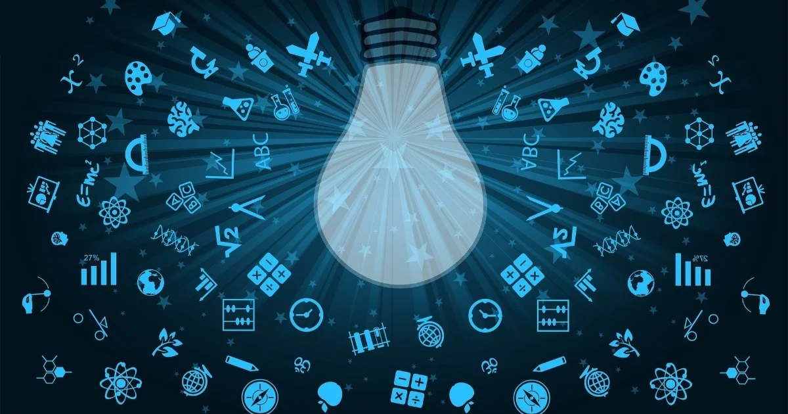
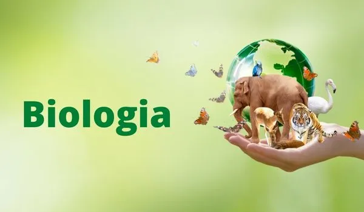

Português
Gramática: Estude os elementos essenciais da gramática, como sintaxe, morfologia e fonética.
Ortografia e Pontuação: Aperfeiçoe sua habilidade na escrita correta das palavras e no uso adequado dos sinais de pontuação.
Compreensão de Texto: Pratique a leitura de diferentes gêneros textuais para melhorar sua interpretação.
Produção de Texto: Aprimore suas habilidades de escrita, aprendendo a estruturar textos de forma coesa e coerente.
Importância do Português: Aprofundar-se na língua portuguesa é essencial para se comunicar efetivamente, interpretar informações e produzir conteúdos de qualidade.
Matemática

Aritmética: Revise e pratique operações básicas, como adição, subtração, multiplicação e divisão.
Álgebra: Estude expressões algébricas, equações e inequações para desenvolver o raciocínio lógico.
Geometria: Explore conceitos de formas geométricas, ângulos e teoremas.
Trigonometria: Introduza-se aos conceitos básicos de seno, cosseno e tangente.
Importância da Matemática: A matemática é fundamental para desenvolver o pensamento lógico e crítico, além de ser aplicada em diversas áreas do conhecimento e da vida cotidiana.
Ciência

Física: Estude conceitos básicos de mecânica, energia, e leis da natureza.
Química: Explore a estrutura da matéria, reações químicas e a tabela periódica.
Astronomia: Aprenda sobre o sistema solar, estrelas e galáxias.
Geologia: Estude a estrutura da Terra, incluindo rochas, minerais e processos geológicos.
Importância da Ciência: Compreender os princípios científicos é crucial para entender o mundo ao nosso redor, promover avanços tecnológicos e resolver problemas ambientais.
Biologia

Biologia Celular: Explore a estrutura e função das células, os blocos de construção da vida.
Genética: Estude os princípios básicos da hereditariedade e como os genes influenciam os organismos.
Ecologia: Aprenda sobre os diferentes níveis de organização biológica e as interações entre os seres vivos e o ambiente.
Fisiologia: Explore os sistemas do corpo humano e como eles funcionam para manter a vida.
Importância da Biologia: O estudo da biologia é vital para a saúde, compreensão dos ecossistemas e desenvolvimento de biotecnologias inovadoras.
Informática

Fundamentos de Computação: Estude os princípios básicos de hardware e software.
Programação: Aprenda a lógica de programação e desenvolvimento de algoritmos.
Bancos de Dados: Introduza-se aos conceitos de bancos de dados e gerenciamento de informações.
Desenvolvimento Web: Explore tecnologias web como HTML, CSS e JavaScript.
Importância da Informática: Conhecimentos em informática são essenciais no mundo digital de hoje, permitindo a automação de tarefas, desenvolvimento de soluções tecnológicas e acesso à informação.